Дополнительные материалы:
- Архив с демонстрационным StyleKit
- Архив с демонстрационной темой
- Демо сайтов, созданных с использованием WordPress Layers
- Скачать WordPress: https://ru.wordpress.org/
- Скачать Layers: Скачать
Руководство по созданию чистых, WordPress совместимых дочерних тем и StyleKit's с использованием фреймворка Layers.
Что такое дочерняя тема?
Дочерняя тема - это такая-же тема для WordPress, которая позволяет наследовать функционал родительской темы, интерфейс, структуру и логику. В случае разработки дочерней темы с использованием Layers, родительской темой выступает LayersWP Theme Framework.
Причины, по которым стоит использовать дочернюю тему:
- Возможность безболезненно обновлять систему, обусловленная строгими критериям разработки тем на WordPress.
- Дочерние темы позволяют значительно ускорить процесс разработки.
- Дочерняя тема - это по сути автономный набор изменений, который легко разрабатывать и поддерживать.
- Кастомизация дочерней темы может потребовать только 100 строк кода, которыми легко управлять в одном месте, в то время, как родительская тема содержит тысячи базовых строк кода, которые мы кастомизируем посредством дочерней темы.
- Соответственно, на плечи разработчика ложится работа по поддержке всего 100 строк кода, а не всего фреймворка.
- Используя дочернюю тему, вы лучше узнаете правильную разработку на WordPress.
Когда стоит разрабатывать дочернюю тему
Разделение тем и плагинов WordPress с некоторых пор стало достаточно размытым, так как и темы и плагины могут обеспечивать дополнительный функционал сайтам на WordPress.
Дочернюю тему стоит разрабатывать, если:
- вы хотите изменять стили темы без использования инструмента WordPress Customizer и других плагинов.
- Вы хотите немного кастомизировать стили определенного блока, который уже готов к работе.
- Вы хотите добавлять пользовательские шаблоны в тему.
Когда необходимо разрабатывать новое расширение:
- Когда вы хотите добавить кастомные типы постов.
- Когда вы хотите добавить новый виджет в LayersWP.
Если вы просто хотите создать легкий шаблон и передать его заказчику - вы можете сделать это наиболее простым способом - создать StyleKit для LayersWP, без расширения функционала фреймворка. Это лучший вариант для дизайнеров.
Темы VS Расширения VS StyleKit
StyleKit: коллекция прессетов, полученных от настроек LayersWP из админки. СтайлКиты включают настройку виджетов, опции, цвета, шрифты и иконки, которые вы использовали при настройке страницы в админке.
Дочерняя тема: используется, когда возможностей StyleKit'а не достаточно для создания полноценного сайта по макету дизайнера. Как правило, дочерняя тема включает дополнительные стили, дополнительные скрипты и функции, а также дополнительные настройки и фильтры.
Расширение: используется для введения полностью нового функционала в LayersWP, в том числе пользовательских типов постов и их шаблонов.
Руководство по созданию StyleKit
Видео урок по созданию StyleKit на реальном примере.

Примеры StyleKit's: https://codecanyon.net/category/skins/layers-wp-style-kits
Это руководство подойдет более для новичков в веб-разработке и веб-дизайнеров, которые желают быстро создать красивый сайт на WordPress, но требует минимальных знаний CSS. Здесь определяются лучшие практики создания StyleKit's, предназначенных для продажи или передачи конечному заказчику (если разрабатываете сайты на заказ).
Мы рекомендуем установить чистую копию WordPress на ваш сервер. Кроме того, стоит учитывать, что проект, созданный с использованием LayersWP, должен иметь зеркальную копию на вашем сервере для разработки сайтов, так как клиент или покупатель StyleKit при установке на свою систему должен получить демо-данные из открытого источника (вашего dev сервера).
Создание пресетов (StyleKit's) для Layers. Основные правила:
- Начинайте создавать свои пресеты для Layers с пустой страницы. При проектировании для широкой публики, должны быть использованы только нативные слои и виджеты Layers, так как дополнительный функционал при экспорте Кита клиенту не будет учитываться.
- Добавляйте кастомные стили только в специализированные поля для CSS - Design Bar.
- На странице редактора добавляйте понятные заказчику или конечному пользователю заголовки и псевдонимы. например, "Портфолио", "Наша команда", "Преимущества" и т.д.
- Экспортируйте каждую страницу в json (об этом далее).
Если ваш StyleKit предназначен для коммерческого распространения, вы должны установить демо на реальном сервере, прежде, чем экспортировать данные. Это гарантирует, что любые демонстрационные данные и изображения могут быть переданы на удаленный сервер и сэкономит время конечным пользователям на ручном импорте.
Кастомизация CSS LayersWP
Каждый виджет имеет опцию "Продвинутое редактирование" на палитре для создания пользовательских классов. Эти классы будут добавлены к основному контейнеру виджета таким образом, что какие-либо свойства, применяемые к классу будут влиять только на этот контейнер (или любой другой виджет с аналогичным классом). Данное поле не является обязательным. Это позволяет применять стиль только к данному виджету или макету страницы и является единственным правильным способом для определения пользовательских классов, чтобы оформлять элементы в Layers, не касаясь HTML кода. Без него вы должны использовать гораздо более сложные селекторы для оформлени конкретных элементов и виджетов. Оформление в CSS id тоже не очень хорошая идея, так как эти идентификаторы уже могут быть использованы во внутренних стилях, якорях или JavaScrip.
Преимущество данного метода заключается в том, что пользовательские классы и стили, добавленные в "Продвинутое редактирование" сохраняются вместе с другими данными при экспорте данных StyleKit. Это делает импорт на сервере конечного пользователя более надежным.
Как использовать панель "Продвинутое редактирование" для кастомизации CSS
Каждый виджет имеет дополнительные опции на панели, которые содержат поле для CSS:
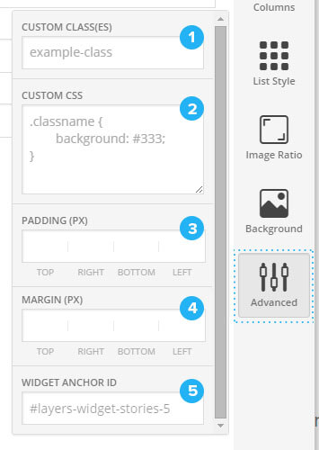Опция CSS в главном меню Настройщика будет загружаться вместе со стилями темы. Если вы хотите что-то изменить глобально, не используйте это поле в виджетах. Для этих целей используйте более длинные цепочки каскада для кастомизации конкретных страниц или виджетов.
Кастомные классы
Пользовательские классы и стили, добавленные на панели "Продвинутое редактирование" сохраняются вместе с другими данными, при экспорте и импорте файла. В отличие от этого, пользовательский CSS, добавленный в основной области, применяется ко всему сайту.
Пользовательский класс автоматически добавляется к тегу <section> - HTML обертке секции.
Основные классы необходимо писать в поле основных стилей сайта на панели слева:
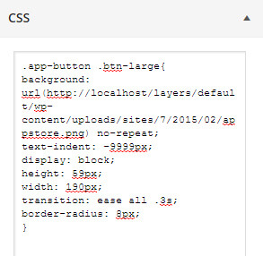Для того, чтобы добавить класс, нажмите кнопку "Продвинутое редактирование" на палитре, а затем введите имя класса в поле пользовательских классов без точки. Имена классов должны быть как можно короче, но уникальными.
Поменяем бэкграунд кнопки:
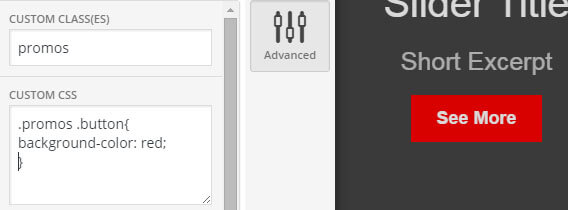Отсюда мы видим, какие манипуляции можно производить с кастомными классами:
- Чтобы повлиять только на конкретный виджет - пользовательские стили размещаются в области пользовательских стилей виджета.
- Для того, чтобы повлиять глобально на этот виджет, стили размещаются в разделе "Пользовательский CSS", на панеле Кастомизатора. Это вам пригодитс в том случае, если вы хотите использовать один и тот-же стиль более одного разана нескольких страницах Layers, но не на всех виджетах, где есть кнопки.
- Для того, чтобы использовать стили несколько раз на одной странице - пользовательские стили размещаются вверху, на "Дополнительной панели" и только один класс может быть добавлен в эту область.
Класс для одного виджета
Если вы хотите повлиять стилями только на один виджет, убедитесь, что имя класса виджета выбрано абсолютно уникальным и не используется повторно в другом месте на странице. Наиболее правильный способ обеспечить это - добавить семантический префикс, который поможет определить цель данного виджета. Например, app-slider или homepage-slider.
Ниже вы найдете простой пример, который показывает, как используется инспектор браузера, чтобы посмотреть существующие классы и существующие стили для заголовка. Затем мы добавили некоторые пользовательские стили, которые сочетает еаш пользовательский клас с классом в заголовке. Увеличим размер шрифта заголовка.
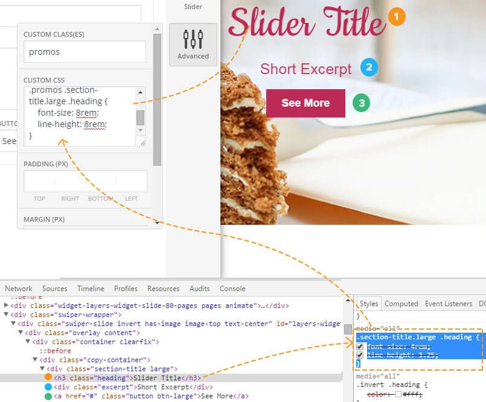Конечно, вариант "Продвинутое редактирование" требует немного знаний CSS, так как мы должны понимать, что такое класс, подкласс и так далее по каскаду. Это простой способ научиться CSS на готовой верстке всем тем, кто хочет разрабатывать веб-сайты.
Глобальные классы с кастомными классами
Пользовательские стили не обязательно могут быть добавленны именно в "Продвинутое редактирование". Если вы планируете использовать стиль в более, чем одном месте, например, для создания кнопки на основе изображения, которую вы хотите использовать на нескольких страницах, вы можете создать один пользовательский стиль со специальным именем класса и добавить его в основную область CSS.
В данном примере, мы комбинируем кастомный класс с именем app-button с классом большой кнопки btn-large:
Наша кастомная кнопка добавляется на CSS панель в основную область Кастомайзера - слева. Если вы хотите использовать этот код на другом сайте, загрузите кнопку на ваш dev сервер или преобразуйте его в текс base64.
.app-button .button {
background: url(http://localhost/layers/default/wp-content/uploads/appstore.png) no-repeat;
text-indent: -9999px;
display: block;
height: 59px;
width: 190px;
transition: ease all .3s;
border-radius: 8px;
}
Если открыть еще один виджет, открыть панель "Продвинутое редактирование" и добавить такое-же имя пользовательского класса, то ко всем кнопкам с этим классом в виджете применятся соответствующие стили.
Специфичные для страницы классы
Таким-же образом можно применить стили для всех элементов страницы с таким классом. Если вы, например, хотите, чтобы все кнопки слайдера были белыми, как в нашем первом примере, но только на данной конкретной странице, вам нужно всего лишь добавить стиль в пользовательские CSS стили на панели сверху. Всем виджетам можно просто добавить соответствующих класс без точки.
Padding и Margin
Пространство между виджетами можно регулировать с помощью полей ввода Padding и Margin, каждое из которых соответствует верхней, правой, нижней и левой сторон виджета.
Margins применяются к наружним сторонам виджета. Paddings - к внутренним. Как в CSS. Чтобы уменьшить пространство между виджетами, устанавливается верхний отступ 20, а затем увеличивается или уменьшается это число на 5, пока вы не добъетесь требуемого результата.
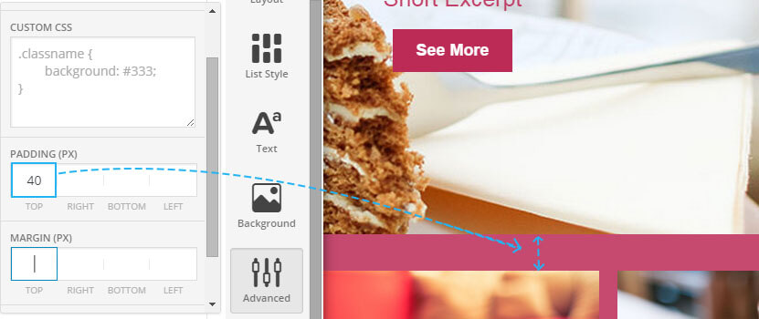Анкоры виджета
Это поле позволяет создавать ID виджета для ограницации плавной навигации по Landing Page.
Глобальные кастомные стили
Глобальные пользовательские стили используются для добавления глобального оформления и находятся на вкладке CSS в меню настройщика слева. При построении пользовательского CSS, имейте ввиду:
- Никогда не копируйте все стили из инспектора или основных стилей - ваши стили должны содержать только изменения определенных свойств и новых дополнений к уже имеющемуся коду.
- Делайте ваш стили проще для понимания.
- Если ваш пользовательский CSS действительно велик и содержит много кода - то создавайте дочернюю тему WordPress Layers. В StyleKit стили должны быть как можно проще и их должно быть немного и они должны быть сосредоточены на основных изменениях, старайтесь все параметры настраивать в админке. Ваш StyleKit не должен содержать много CSS, хаки или жестко заданный размер шрифта - его можно настроить в админке виджета.
Чтобы подготовить ваши кастомные стили для вашего StyleKit, просто скопируйте его в редактор и сохраните с именем css.txt.
Пример css.txt: css.txt
Экспорт контента
Наличие содержимого StyleKit в XML является важным условием в обеспечении комфортного импорта данных клиентом. Перед экспортом проверьте следующее:
- StyleKit не имеет тэгов Post -> Tags.
- Если ваш кит содержит демо посты, убедитесь, что любая из категорий, вами созданная соответствует вашему киту, в противном случае, создавайте только один с названием "Demo". Это сделает настройку и очистку содержания легче для конечного пользователя и снижает риск возникновения дубликатов.
- Прочие страницы Layers не должны использовать именования, такие, как "Главная", "Портфолио", "Магазин", или "Блог" в тайтле заголовка.
- Очистите корзину постов и страниц.
- Удалите все комментарии.
- Убедитесь, что все плагины отключены, чтобы избежать импорт лишних данных.
Если ваш StyleKit предназначен для коммерческого распространения, необходимо настроить демо на реальном сервере, прежде, чем экспортировать данные. Это гарантирует, что все изображения будут без проблем переданы на удаленный сервер.
Экспортируйте весь контент инструментом "Экспорт" в WordPress. Назовите файл экспорта your_kit-content.xml где your_kit это название StyleKit'а. Например: kittn-content.xml
Создайте файл Readme
Ваш ридми должен включать общую информацию о вас, как об авторе, смотреть пример ридми и некоторые основные инструкции по использованию. Вы можете скопировать readme.txt из примера и настроить под себя.
Структура готового StyleKit
-
folder
- images
- css.txt
- layout-one.json
- layout-two.json
- kit_name-content.xml
- readme.txt
Что еще нужно не забыть сделать:
- Протестируйте ваш кит на свежей WordPress.
- Упакуйте ваш кит в Zip архив и именуйте его следующим образом: kitname_layers-style-kit.zip
Скачать пример StyleKit: Скачать
Руководство по созданию дочерней темы
Создать дочернюю тему для WordPress снуля довольно просто. В этом разделе мы проведем вас через все этапы создания дочерней темы, которые вы сможете повторить на своей собственной дочерней теме.
Что вам понадобится:
- Редактор кода, например, Sublime Text.
- Редактор изображений, для создания и редактирования .png файлов, например. Adobe Photoshop.
Создание директорий
- Создайте папку в нижнем регистре в каталоге с темами. Назовите ее layers-child. 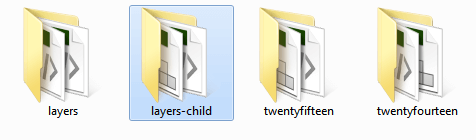
- Создайте .css документ и сохраните его под именем style.css
- Создайте новый .php файл и сохраните его под именем functions.php
- В графическом редакторе создайте красивое превью темы в формате .png шириной 880px и высотой 660px. Сохраните его под именем screenshot.png
Теперь вы имеете скелет дочерней темы со следующей структурой:
-
layers-child
- functions.php
- style.css
- screenshot.png
Структурирование вашей темы
Ваша дочерняя тема может работать используя всего один файл - style.css. Тем не менее, вы, вероятно, захотите создать что-то более сложное с дополнительными шаблонами, скриптами, функциями, стилями и изображениями. Мы рекомендуем использовать следующую структуру:
-
layers-child
- assets
- css
- images
-
js
- theme.js
- languages
- partials
- functions.php
- style.css
В тех случаях, когда вы планируете добавить дополнительные файлы, такие как изображения, сценарии или шаблон, то структура вашей дочерней темы должна максимально соответствовать структуре родительсткой темы (Layers).
Конечно, если вы начинаете делать темплейт с нуля, то ваши файлы не содержат ни какого кода и не делают ни чего полезного. Давайте исправим это путем создания файла style.css:
style.css
Style.css должен объявить имя папки родительского шаблона в заголовке правильно и наследовать функциональность и структуры родительской темы.
Ниже приведен пример, как должен выглядеть заголовок стилей в файле style.css:
/*
Theme Name: Layers Child
Description: Layers Child Theme Test: https://www.oboxthemes.com
Author: Obox Themes
Template: layerswp
Version: 1.0.0
License: GPL 2.0
License URI: https://www.gnu.org/licenses/gpl-2.0.html
**Color reference, for consistency**
link color: #3D454C
border color: #CCC
light blue: #009DF3
**Table of contents**
1. Header
2. Forms
3. Invert
4. Buttons
5. Headings
6. Sidebar
7. Meta
8. Footer
/*---------------------------*/
/*- MAIN CSS ----------------*/
/*---------------------------*/
/*---------------------------*/
/*- 1 HEADER -------*/
Theme Name: должен соответствовать имени папки дочерней темы, заглавные буквы должны быть большими. Это поле используется для отображения названия вашей темы в WordPress.
Description: Краткое описание шаблона, дополнительные детали
Author: Автор Темы
Template: наименование папки родительской темы. Это поле должно быть точным.
Version: Версия шаблона. Начинается с 1.0.0
Далее идут поля для лицензии.
Ссылки на цвет не являются обязательными, но они помогают сохранить последовательность ваших цветовых оттенков, особенно, если вы любите проектировать в браузере.
Table of Contents: Данный раздел помогает сохранить четкую организацию стилей CSS, если вы намерены представить свою тему для ThemeForest. Каждый элемент в таблице содержания соответствует комментариям в заголовке.
Настройка functions.php
Файл functions.php хранит большинство ваших пользовательских функций и хуков. По умолчанию он выглядит грустно и пусто. Данный файл должен начинаться с тега php:
<?php
// Custom Functions Go Below
Это все, что вам нужно сейчас, позже мы вернемся к этому файлу, чтобы добавить несколько функций.
Установка и активация
Тема готова к тому, чтобы ее установить и активировать. Вы можете сжать папку с дочерней темой в Zip архив и установить из админки WordPress, либо просто, закинув папку в категорию с темами в файловой системе.
Ниже мы подготовили стартовый шаблон, который уже содержит первоначальную структуру, справочные стили и функции, в том числе и то, что мы изучили ранее для того, чтобы проиллюстрировать, как должна работать дочерняя тема. Если вы опытный разработчик, мы рекомендуем использовать это скелет в своей работе.
Скачать стартовый шаблонУстановка дочерней темы
- Убедитесь, что Layers установлен!
- Перейдите в раздел "Внешний вид -> Темы" и нажмите - добавить тему.
- Нажмите - загрузить тему.
- Нажмите "Обзор", выберите архив с дочерней темой и нажмите "Установить".
- Активируйте тему.
Стиллизация и шрифты
Первре, что вы, вероятно, хотите настроить - это базовая стилизация вашей дочерней темы. В данном разделе приведены несколько советов о том, как быстро рестайлить основные компоненты темы и предотвратить ошибки в разработке.
Настройка дефолтных цветов и шрифтов темы
Большая часть Layers позволяет настраивать стили сайта в админке. Но если вы являетесь разработчиком темы, то вам необходимо установить дефолтные значания, до настройки темы пользователем в панели управления.
Для начала установите простой фильтр в functions.php с помощью хука layers_customizer_defaults
add_filter( 'layers_customizer_control_defaults', 'layers_child_customizer_defaults' );
function layers_child_customizer_defaults( $defaults ) {
$defaults = array(
'body-fonts' => 'Open Sans',
'form-fonts' => 'Montserrat',
'header-menu-layout' => 'header-logo-top',
'header-background-color' => '',
'site-accent-color' => '#f00',
'footer-background-color' => '',
'header-width' => 'layout-fullwidth',
'header-sticky' => '1',
'heading-fonts' => 'Montserrat',
'footer-sidebar-count' => '0',
);
return $defaults;
}
В этом примере мы устанавливаем по умолчанию шрифты Заголовка макета, Тела и Форм, верхний и нижний колонтитулы, цвета и число по умолчанию нижнего колонтитула виджетов. Когда конечный пользователь активирует нашу дочернюю тему, данные параметры будут выставлены в админке с соответствующими значеними. Это значительно упрощает настройку макета клиентам и работать с ней становится проще.
Давайте разберем функцию по полочкам
В первой строке определяется уникальное имя пользовательской функции. Здесь для примера мы называем ее layers_child_customizer_defaults. Вы можете назвать ее по своему, например, layers_business_customizer_defaults? если ваша тема назыывается "Layers Business".
Начиная со строки 3 вы можете установить значение каждого параметра в массиве. После кажого элемента ставится запятая в конце строки.
'option-name' => 'value',Для опции цвета в шестнадцатеричной системе вы можете поставить акцентный цвет или оставить пустое значение. Цвета, которые задаются пользователем в админке - переопределяют данные значения, как и все другие параметры.
В заключении, на строке 17 используйте add_filter для аргументов 1defaults (layers_child_customizer_defaults), в оригинале (layers_customizer_control_defaults).
Смотрите, не так уж и плохо! В следующей главе мы более подробно рассмотрим хуки и фильтры для того, чтобы вы могли создавать свои пользовательские функции. Это необходимо дл добавления пользовательского HTMl или создания нового виджета в вашей теме.
Стили Layers
Теперь у вас есть настройки по умолчанию и вы можете перейти к более точной стилизации дочерней темы в style.css.
Внимание! Не копируйте ценлые блоки стилей в вашу дочернюю тему из инспектора браузера.
Layers разделяет все стили на несколько файлов для поддержания понятной структуры темы.
framework.css - содержит базовые стили. В большинстве случаев вы ни когда не должны изменять данные стили.
components.css - содержит стили для виджетов и других компонентов Layers. Кастомайзер позволяет контролировать большую часть оформления здесь, но изменять их нужно с осторожностью.
responsive.css - стили, отвечающие за адаптивность сайта.
woocommerce.css - пользовательские стили Layers для магазина WooCommerce: оформление заказа, корзину.
Данные ссылки на GitHub могут быть использованы для справки, чтобы была возможность посмотреть оригинальный стиль в контексте зависимых и родительских селекторов. Можно также посмотреть стили и в инспекторе браузера, там вы также можете видеть, в каком файле и какой каскад содержит необходимые стили.
Быстрый рестайлинг
Для начала кастомизации стилей, откройте пустой style.css или работайте с образцом, который мы представили выше. Ни когда не копируйте оригинальные стили вашей дочерней темы, так как это ослабляет имунитет к свойствам родительского стиля в каскаде, а также загружает ненужные данные на страницу.
Лучше использовать тот-же селектор или удлиненный родителем для переопределения тех свойств, которые вы хотите изменить.
Ниже приведены некоторые советы о том, как быстро построить нужные CSS каскады с помощью инспектора браузера:
- Смотрите стили сверху-вниз, так как cверху отображаются самые сильные селекторы.
- Проверяйте все изменения в инспекторе браузера.
- Скопированные доминирующие селекторы можно переопределить в вашем CSS.
Инспектирование элементов вашей дочерней темы
Инспектор кода доступен практически в любом современном браузере, будь то Chrome, Firefox, Opera или Safari.
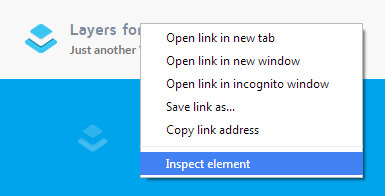Выберите интересующий элемент в окне просмотре HTML слева, пусть это будет <header>, он должен подсветиться в основном окне просмотра.
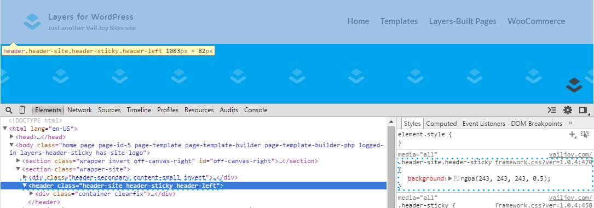Все стили данного элемента можно просмотреть в окне CSS справа.
Селектор с наибольшим каскадом окажется выше других в окне просмотра CSS. Это означает, что стиль, примененный к заголовку будет влиять на все теги заголовков, в то время, как .header-site влияет только на элементы данного класса. Заголовок .wrapper-site будет влиять на все заголовки, специфичные для контейнера и класса .wrapper-site.
Вы можете взять сформированный инспектором каскад. Для специфичных секций указывается в начале каскада родителя, которого нет в сформированном инспектором каскаде.
Важно! Избегайте использование !important. Если вы работаете с !important, значит вы неправильно определили каскад.
Проверка изменений
Самый простой способ посмотреть изменения - это щелкнуть в свободном пространстве Кастомайзера. Также можно проверить изменения в инспекторе браузера.
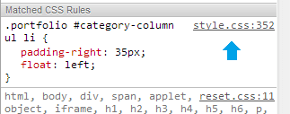Все измененные свойства стилей немедленно должны отобразитьс в окне браузера на вашем сайте. Ок, но что делать, если вы все еще не определили правильный каскад?
Селекторы, переопределения и каскад
Использование инспектора браузера - самый быстрый способ узнать селектор элемента и определить родительский. Но бывает и так, что при попытке изменить какое-то свойство, результата вы не видите. В некоторых случаях помогает добавление родителя в начало каскада.
Некоторые стили задаются непосредственно элементам.
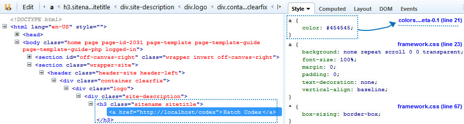Если вы проверите тег <h3>, то заметите, что там цвет не задан. Даже если бы он был задан у тега H3, ссылка все равно была бы другого цвета, так как преимущество тега a в html сильнее, чем у родителей. В таком случае нужно указать цвет непосредственно. тегу A через каскад с родителем:
.sitename a{color: #fff;}Вы также перед публикацией ссылок можете создавать новый каскад в инспекторе, редактировать нужным образом, а затем вставлять в свой CSS.
Определение специфичных селекторов всей страницы
Если вы хотите изменить стиль элемента на конкретной странице, вам нужно брать в каскад в качестве главного родитедя ID всей страницы, чтобы браузер понимал, что изменения должны коснуться только этой страницы.
Используя инспектор найдите тег <body> и посмотрите название класса:
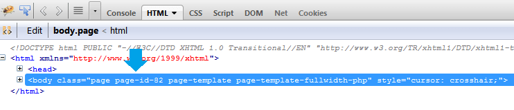В данном примере, селектор шаблона для этой страницы - "page-template-fullwidth-php". Можно использовать и класс .page для всех страниц, но в данном случае, мы хотим изменить стили на конкретно этой странице сайта.
Подключение CSS в functions.php
Стили Layers не обязательно загружать в какие-то другие файлы, кроме style.css, но удобнее использовать несколько тематических файлов, чтобы лучше организовать определенные части стиллизации. framework.css является основным файлом стилей, который управляет всем макетом и всегда загружается первым, а затем все стальные стили компонентов, стили адаптивности.
Для примера подключим необходимые стили компонентов родительского шаблона и какого-то плагина в functions.php:
wp_dequeue_style('layers-components');
wp_enqueue_style(
'layers-components',
get_template_directory_uri() . '/assets/css/components.css',
array('layers-framework')
); // Components
wp_dequeue_style('plugin-style-name');
wp_enqueue_style(
'plugin-style-name',
plugins_url() . '/plugin-name/css/main.css',
array('layers-style')
); // Plugin
Теперь при загрузке страницы эти стили будут загружены перед стилями дочерней темы.
Настраиваем правильные пути
Есть несколько способов получения путей в WordPress, которые применяются для использования в теме и функциях. Давайте рассмотрим разницу между ними:
get_template_directory_uri() - вернет URL родительской темы (http://localhost/wp-content/themes/layers).
get_stylesheet_directory_uri() - вернет URL дочерней темы без конечного слеша (http://localhost/wp-content/themes/layers-child).
get_stylesheet_directory() - вернет абсолютный путь сервера до дочерней темы без последнего слеша (/home/user/public_html/wp-content/themes/layers-child).
get_template_directory() - вернейт абсолютный путь до родительской темы (/home/user/public_html/wp-content/themes/layers).
plugins_url() - вернет абсолютный путь до плагинов без последнего слеша.
Изображения, шрифты и изменение иконок
Layers может не использовать иконки на основе изображений или спрайты во фронтенде темы и вы можете использовать шрифтовые иконки в шаблоне. Следующий пример показывает, как можно подключить FontAwesome в начале загрузки всех стилей:
if( ! function_exists( 'layers_child_styles' ) ) {
function layers_child_styles() {
wp_enqueue_style(
'font-awesome',
'//maxcdn.bootstrapcdn.com/font-awesome/4.2.0/css/font-awesome.min.css';
); // FontAwesome
}
}
Когда вы включаете библиотеку FontAwesome в вашу дочернюю тему, вы должны установить относительный путь:
wp_enqueue_style(
'font-awesome',
get_stylesheet_directory_uri.'/assets/fonts/fontawesome/fontawesome.css';
); // FontAwesome
Google Fonts
Нет необходимости добавлять шрифты Google в functions.php, как другие кастомные стили и стили темы. Вместо этого, можно установить шрифт в настройщик темы по умолчанию, как описано в начале статьи. Пример с настройками шрифта:
function layers_child_customizer_font_defaults( $defaults ) {
$defaults = array(
'heading-fonts' => 'Merriweather',
'body-fonts' => 'Lato',
'form-fonts' => 'Lato',
);
return $defaults;
}
add_filter( 'layers_customizer_control_defaults', 'layers_child_customizer_font_defaults' );
Этот метод важен, посколько экономит куча времени на подключении шрифтов.
Кастомные шрифты
Пользователькие шрифты, которые отсутствуют в шрифтах Google могут быть добавлены в дочернюю тему с помощью @font-face в style.css или более правильным методом в functions.php
Для подключения шрифта, создадим отдельную таблицу стилей fonts.css и подключим в functions.php там, где подключаются стили:
wp_enqueue_style(
'custom-font',
get_stylesheet_directory_uri.'/assets/css/fonts.css',
array('layers-style')
);
Включение в тему скриптов и PHP файлов
Подключение JavaScript
Любой новый скрипт должен быть располопжен в дочерней теме в директории assets/js, затем подключен в functions.php посредством wp_enqueue_script
if( ! function_exists( 'layers_child_scripts' ) ) {
function layers_child_scripts() {
wp_enqueue_script(
'layers-child' . '-custom',
get_stylesheet_directory_uri() . '/assets/js/theme.js',
array(
'jquery', // make sure this only loads if jQuery has loaded
)
); // Custom Child Theme jQuery
}
}
add_action('wp_enqueue_scripts', 'layers_child_scripts');
Чтобы изменить сценарии Layers, такой, как сладер, например, не стоит копировать этот сценарий из родительской темы в дочернюю. Вместо этого используйте API и включите фрагменты jQuery сниппетов для управления какими лио аргументами, скрипт подключится к вашему theme.js файлу.
Подключение PHP файлов
Если какой-то PHP функционал хранится в вашей дочерней теме, то вы можете подключить его в тему посредством require_once(1path).
require_once( get_stylesheet_directory() . '/assets/my_filters.php' );Добавление кода с хуками Action
Actions позволяют вставлять пользовательскую функцию или немного кода в определенное место основной программы. Вы можете создать пользовательское действие с помощью Wordpress Action API для удаления или добавления кода в любых программах. Это называется "Хукинг".
Layers предлагает работу с Action API для подключения ваших собственных пользовательских действий. Это позволяет вам настроит шаблоны с вашими функциями или HTML без необходимости копировать весь код дочернюю тему.
Например: Вы можете добавить свой код в футер сайта. Это может быть достигнуто путем написания новой функции, содержащей ваш пользовательский код, а затем подключить его к wp_footer, или вы можете использовать Layers Action API, для оптимального размещения таких действий, как "layers_before_footer_copyright", который будет выводить элемент чуть выше копирайта на сайте.
Пользовательские экшены отличаются от пользовательских фильтров тем, что пользовательские экшены позволяют добавить или удалить код из существующих экшенов, а пользовательские фильтры позволяют заменить конкретные данные (например, переменной или класса), найденные в рамках существующих экшенов.
Изменение кода с помощью фильтров
Фильтры позволяют изменить или удалить существующую функцию
Например, вы, возможно, захотите вставить еще один класс CSS в HTML элемента, или изменить хлебные крошки. Использование фильтров снижает необходимость копировать целые шаблоны или основные файлы Layers в вашу дочернюю тему и избавляет вас от необходимости постоянно проверять различные изменения после обновлений.
Пользовательские шаблоны страниц
Кастомные шаблоны страниц могут включать различные архивные макеты, улучшенную версию стандартных страниц Layers, которые содержат пользовательские виджеты или шаблоны, которые поддерживают специальные типы постов, а также, пользовательских макетов интернет-магазина WooCommerce.
Добавление нового шаблона страницы
В этом разделе мы рассмотрим добавление пользовательских шаблонов, отличных от стандартных Layers шаблонов.
Каждый новый шаблон страницы должен начинаться с заголовка, определяющего наименование темплейта.
<?php
/*
Template Name: My Custom Page
*/
get_header(); ?>
Отсюда следует разметка, которая соответствует структуре стандартных шаблонов Layers:
<?php get_template_part( 'partials/header' , 'page-title' ); ?>
<section <?php post_class( 'content-main archive clearfix' ); ?>>
<?php do_action('layers_before_page_loop'); ?>
<div class="row">
<?php if( have_posts() ) : ?>
<?php while( have_posts() ) : the_post(); ?>
<article <?php layers_center_column_class(); ?>>
<?php get_template_part( 'partials/content', 'single' ); ?>
</article>
<?php endwhile; // while has_post(); ?>
<?php endif; // if has_post() ?>
</div>
<?php do_action('layers_after_page_loop'); ?>
</section>
<?php get_footer(); ?>
Строка 1: Title
Вы можете вызвать данную функцию, чтобы загрузить заголовок непосредственно с помощью Layers Framework, для того, чтобы состряпать секцию заголовка. Вот пример того, как мы настраиваем загаловок на кастомной странице результатов поиска по сайту:
<section class="title-container">
<div class="title">
<h2 class="heading"><?php printf( __( 'Search Results for: %s', LAYERS_CHILD_THEME_SLUG ), get_search_query() ); ?></h2>
</div>
</section>
Строка 3: <section>
Каждый контейнер страницы завернут в секцию и должен содержать post_class(). В данной функции мы устанавливаем два минимальных необходимых классов: content-main и clearfix. Вы можете настроить это для того, чтобы вставить автоматически сгенерированный ID, если это одностраничный сайт. Вы также можете вставить свой собственный класс в post_class.
<section id="post-<?php the_ID(); ?>" <?php post_class( 'content-main clearfix' ); ?>>или
<section <?php post_class( 'content-main clearfix archive custom-class' ); ?>>Стрки 4 и 18: Экшен хуки перед и после цикла
Добавьте хук layers_before_page_loop, если вы хотите использовать для вывода своего собственного кода в этом шаблоне. Не забудьте сослаться на эти хуки при разработке документации перед продажей шаблона.
Строка 5: <row>
Строка row нужна для безопасности и стилизации, но пропущена быть не должна ни в коем случа.
Строка 6: Цикл
Каждый шаблон должен содержать цикл, если он предназначен для вывода содержимого или фида постов. Вы можете не использовать цикл, если ваш шаблон предназначен не для этого, а например, для вывода виджетов в определенных областях. Шаблоны страниц, включенные в Layers используют примерные циклы вывода. В нашем примере цикл является стандартным, без каких-либо модификаций, который выводит последние статьи. Для определения вывода в цикле вы должны использовать исключительно WP_Query.
Строка 10: <article>
<article> является наиболее распространенным в кастомных шаблонах. Функция layers_center_column_class используется для автоматической установки классов с включенным span или определяетширину контента. Это позволяет динамически регулировать данный контейнер, в зависимости от настроек компоновки пользовательского сайдбара. Если вы не используете данный функционал в вашей теме, вы можете устанавливать классы вручную.Для получения полной ширины страницы:
<article <?php layers_center_column_class(); ?>>
<!-- заменяем на -->
<article class="column span-12">
Строка 11: Фрагменты
Наш пример кода использует uses get_template_part, можете посмотреть в папке родительской темы Layers /partials. Фрагменты разделяют ваш шаблон на отдельные файлы, которые могут быть повторно использованы в других шаблонах и помогают сохранить правильную организацию темы, сводя к минимуму дублирование кода.
Фрагменты нужно хранить в корне темы или в каталоге /partials дочерней темы. Всегда проверяйте путь до подключаемого файла.
<?php get_template_part( 'partials/content', 'single' ); ?>Строка 21: Footer
Чтобы завершить шаблон, всключите футер.
<?php get_footer(); ?>Области виджетов
Обычно структура виджета следующая: Title > Content > Footer. Если вы хотите создать шаблон страницы, который включал бы области виджета или боковые панели, вы можете включить их, используя любую из функций Layers Sidebar или зарегистрировать кастомный сайдбар и вывести его с помощью dynamic_sidebar().
Для начала нужно зарегистрировать область виджета или сайдбар в вашей дочерней теме, в файле functions.php. В следующем примере у нас есть собственный шаблон страницы, который выводит последние посты и сайдбар, используя Layerы Blog на главную страницу и включает пользовательскую область виджета для добавления виджетов до контента нашего темплейта.
add_action( 'widgets_init' , 'layers_child_register_standard_sidebars' , 50 );
if (!function_exists('layers_child_register_standard_sidebars')) {
function layers_child_register_standard_sidebars() {
register_sidebar( array(
'id' => 'home-page-blog-top',
'name' => __( 'Home Page Above Blog' , 'layers-child-slug' ),
'description' => __( '' , 'layers-child-slug' ),
'before_widget' => '',
'after_widget' => '',
)
);
}
}
Обратите внимание, что значения before_widget и after_widget пустые, так как каждый виджет будет на выходе иметь свою оболочку, используя <section>Элемент.
Значение ID является важным и используется в вызове сайдбара в вашей теме WordPress.
Теперь для нашего шаблона напишем:
<?php
/**
* Template Name: Home Blog
* The template for displaying post archives on the homepage
*
*/
get_header(); ?>
<?php do_action('before_layers_builder_widgets'); ?>
<?php if ( is_active_sidebar( 'home-page-blog-top' ) ) {
dynamic_sidebar( 'home-page-blog-top' );
} ?>
<section <?php post_class( 'content-main archive clearfix' ); ?>>
<?php
/**
* Maybe show the left sidebar
*/
layers_maybe_get_sidebar( 'left-sidebar', 'column pull-left sidebar span-3' ); ?>
<?php
// Make sure pagination works and only grab 3 posts: https://developer.wordpress.org/reference/classes/wp_query/#pagination-parameters
if ( get_query_var('paged') ) { $paged = get_query_var('paged'); }
elseif ( get_query_var('page') ) { $paged = get_query_var('page'); }
else { $paged = 1; }
$args = array(
"post_type" => "post",
"paged" => $paged,
"posts_per_page" => 3
);
$wp_query = new WP_Query($args);
// Begin Loop
if( $wp_query->have_posts() ) : ?>
<article <?php layers_center_column_class(); ?>>
Разберем шаблон.
Строка 3: Заголовок темплейта
Здесь мы определим на шаблон как Home Blog
Строка 10: before_layers_builder_widgets hook
Хук before_layers_builder_widgets ялется обязательным. В строке 11 мы включаем нашу пользватаельскую зону для виджета непосредственно, так как она не используется на других страницах, но мы также могли сделать это хукингом в functions.php с is_page_template, например:
add_action('before_layers_builder _widgets', 'add_home_blog_widgets');
function add_home_blog_widgets(){
if( is_page_template('home-blog.php') ) {
dynamic_sidebar( 'home-page-blog-top' );
}
}
Строка 11: кастомная область для виджета
Пользовательские области виджета можно включить, как и любой сайдбар и проверять активность условием is_active_sidebar.
<?php if ( is_active_sidebar( 'home-page-blog-top' ) ) {
dynamic_sidebar( 'home-page-blog-top' );
} ?>
Переопределение дефолтных шаблонов
Ояпть же, хукинг должен использоваться везде, где это возможно для изменения существующих шаблонов в Layers Framework. Есть случаи, когда просто можете изменить сам шаблон, который требует переопределения.
Все, что вам нужно сделать, чтобы переопределить шаблон, это скопировать его в каталог дочерней темы, используя ту же файловую структуру, как и у родительской темы Layers.
Есть некоторые моменты, которые вы не должны изменять в существующих шаблонах Layers и некоторые правила:
- Не изменяйте заголовок типов. Layers активно работает с экспертами SEO, чтобы определить наиболее эффективный заголовок и структуру, а заголовки напрямую связаны со стилями типографики фреймворка.
- Не изменяйте существующие HTML элементы? взятые из Layers Framework, лучше их добавлять.
- Не удаляйте классы или функции по умолчанию, вызванные внутри враппера, иначе есть риск сломать функциональность фреймворка или перебить настройки. Лучше добавлять классы.
- Не используйте query_posts() для изменения дефолтного запроса.
Кастомные типы постов и таксономии
Кастомные мета поля
Пользовательские мета поля просто формируются из полей, добавленных в редакторе поста, настройщик или в опции виджета. Значение этих полей можно извлекать различными способами.
Если вы разрабатываете сайт для одного клиента, а не публичную тему или плагин, то вам легче будет работать с плагином Advanced Custom Fields.
Произвольные поля на странице редактирования
Это не специальный способ добавления мета в редакторе из дочерней темы Layers - это традиционный способ WordPress. Тем не менее, вы можете воспользоваться фреймворком Layers для построения элементов для себя, расширяя Layers_Form_Elements через замечательную функцию input().
Руководство по процедурному способу:
Создайте файл
Для начала создайте PHP документ под названием meta.php и сохраните его в вашей дочерней теме в папке /includes. Начальная структура файла:
<?php
/**
* My Theme Custom Meta
* https://webdesign-masteru.github.io
**/
// Add The Meta Box
//Add The Callback
//Build the form with Layers_Form_Elements
//Save The Meta
Далее мы будем создавать функционал в этом файле, в том числе и в главном файле функций.
В этом примере я покажу, как можно добавить фото и поле для url. Если у вас есть созданный тип постов, то вы можете применить это к другим типам записи довольно просто.
Добавление метабокса
/**
* Add The Meta Box
**/
function layers_child_add_meta_box() {
$screens = array('post');
foreach ( $screens as $screen ) {
add_meta_box(
'layers_child_meta_sectionid',
__( 'My Theme Options', 'layerswp' ),
'layers_child_meta_box_callback',
$screen,
'normal',
'high'
);
}
}
Строка 3: - Настройка вашей функции. Наименование должно быть уникальным и заканчиваться на *_add_meta_box, чтобы избежать возможных конфликтов с другими темами или плагинами (т.е. не использовать ‘layers_child_’ как ваш префикс).
Например: yourtheme_postype_add_meta_box
Строка 6: - Переменная 1screen позволяет настроить массив типов постов, которые должны ассоциироваться с вашим метабоксом. По умолчанию, в Layers это просто "post". Если ваш плагин добавлен в кастомный тип полей, вы можете добавить slug в массив, например: 1screens = array('post', 'my_portfolio');.
Строка 9: - Здесь мы используем add_metaBox для создания панели.
Строка 10: - Уникальный ID для нашего метабокса. Мы обратимся к этому позже, когда начнем создавать поля.
Строка 11: - Отображение тайтла метабокса. Обратите внимание, если метабокс предназначено для публичного релиза, то эта строка должна быть интернационализирована с использованием _().
Строка 12: - Именование функции.
Строка 13: - Тип поста, в котором должен отображаться метабокс. Так как мы используем переменную в строке 6, то установим переменную 1screen.
Строка 14: - Определет раздел страницы, где должен располагаться метабокс (normal, advanced, side). 'normal' размещается под редактором.
Строка 15: - Определяет порядок внутри секции, где матабокс будет размещен (high, core, default, or low). 'high' помещает метабокс выше Layers Options, прямо под редактором.
Теперь подключим нашу функцию в add_meta_boxes:
add_action( 'add_meta_boxes', 'layers_child_add_meta_box' );Если вы добавите новый пост, то увидите созданный метабокс, хотя он еще будет пустой, пока не будет создана функция каллбек.
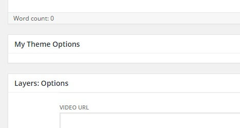Создаем форму
/*
* Create Meta Callback - Prints the box content.
* @param WP_Post $post The object for the current post/page.
*/
function layers_child_meta_box_callback( $post ) {
// Add an nonce field so we can check for it later.
wp_nonce_field( 'layers_child_meta_box', 'layers_child_meta_box_nonce' );
/*
* Use get_post_meta() to retrieve an existing value
* from the database and use the value for the form.
*/
$credit_name = get_post_meta( $post->ID, 'my_photo_credit', true );
$credit_url = get_post_meta( $post->ID, 'my_credit_url', true );
// form elements go here
}
Строка 5: - Создание каллбек функции.
Строка 8: - Используйте wp_nonce_field для настройки. Есть только 2 обязательных параметра:
- Название экшена: Это может быть что угодно и просто добавляет контекст. Мы выводим мета опцию, поэтому мы просто выводим layers_child_meta_box. Должно быть уникальным
- Nonce Name: скрытое поле, мы сделали layers_child_meta_box_nonce
Строки 14-15: - Здесь мы устанавливаем две переменные, которые представляют ключи наших мета полей с использованием get_post_meta, 1credit_url и 1credit_name, которые соответствуют нашим двум полям.
Мета данные обрабатываются парой ключ/значение. Ключ - это имя элемента метаданных. Значение - это информация, которая будет отображаться в списке метаданных каждого отдельного поста, с которым связана нформация.
1post->ID - извлекает идентификатор поста, который создается, просматривается или запрашивается.
'my_photo_credit' - второй параметр, имя мета ключа. Должно быть уникальным и семантическим.
true используется для возвращения значения.
Layers Form Elements
Для наших целей нам нужны только два текстовых поля. Вы можете создать поле сообщения, значок/изображение, селектор, выбор файла, чекбокс, радиобаттон с использованием input(), а также, текстовые поля для использования специальных функций фреймворка.
if( class_exists( 'Layers_Form_Elements' ) ) {
$form_elements = new Layers_Form_Elements();
//Photo Source
echo '<p class="layers-form-item">';
echo '<label>'.__('Photo Source URL', 'layerswp').'</label> ';
echo $form_elements->input(
array(
'type' => 'text',
'name' => 'my_photo_credit',
'id' => 'my_photo_credit',
'placeholder' => __( 'Photo Source', 'layerswp' ),
'value' => ( isset( $credit_name ) ? $credit_name : '' ),
'class' => 'layers-text'
)
);
echo '</p>';
// Photo Source URL
echo '<p class="layers-form-item">';
echo '<label>'.__('Photo Source URL', 'layerswp').'</label> ';
echo $form_elements->input(
array(
'type' => 'text',
'name' => 'my_credit_url',
'id' => 'my_credit_url',
'placeholder' => __( 'Photo Credit URL', 'layerswp' ),
'value' => ( isset( $credit_url ) ? $credit_url : '' ),
'class' => 'layers-text'
)
);
echo '</p>';
} // Check Class
Строки 1-2: - Мы начинаем с условия, которое проверяет, что Layers установлен. Это полезно для предотвращения ошибок, если пользователь забыл установить Layers.Установите значение 1form_elements для новых Layers_Form_Elements.
Строка 4: (необязательно) - Устанавливает враппер для поля. Использование параграфа с классовм layers-form-item растянет поле на всю ширину метабокса, как и поле "Video URL". Если вы не хотите использовать оболочку для полей, то они будут отображаться рядом друг с другом:
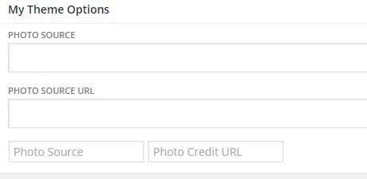Строка 5: (необязательно) - Добавляет <label> для элементов, которые не понимают "label" аргумент. Лэйблы должны быть завернуты в __().
Строки 6-16: - Настройка массива input().
- Обратите внимание, что мы ссылаемся на нашиимена ключей мета в каждом из имен инпутов и значений 'id'.
- Затем мы используем наши выходные переменные для установки 'value' полей. При использовании isset, мы принимаем данные только в том случае, если они существуют: ( isset( $credit_url ) ? $credit_url : '' )
- И наконец, параметр 'class' позволяет использовать существующие стили для наших полей. Это необязательно - вы можете заменить ваш класс собственным, если угодно. Но имейте ввиду, что CSS админ панели должен быть загружен отдельно от Front-End CSS.
Поля TinyMCE
Есть одно преимущество пользовательских полей перед кастомайзером - это поле редактирования с WYSIWYG редактором. В следующем примере мы все еще внутри нашей функции layers_child_meta_box_callback function:
$photo_description = get_post_meta( $post->ID, 'my_photo_desc', true );
/* Add WP Editor as replacement of textarea */
echo '<p class="layers-form-item">';
echo '<label>'.__('Photo Description', 'layerswp').'</label> ';
wp_editor( $photo_description, 'my_photo_desc', array(
'wpautop' => true,
'media_buttons' => false,
'textarea_name' => 'my_photo_desc',
'textarea_rows' => 10,
'teeny' => true
) );
echo '</p>';
Сохранение метаданных
function layers_child_save_meta_box_data( $post_id ) {
// Checks save status
$is_autosave = wp_is_post_autosave( $post_id );
$is_revision = wp_is_post_revision( $post_id );
$is_valid_nonce = ( isset( $_POST[ 'layers_child_meta_box_nonce' ] ) && wp_verify_nonce( $_POST[ 'layers_child_meta_box' ], basename( __FILE__ ) ) ) ? 'true' : 'false';
// Exits script depending on save status
if ( $is_autosave || $is_revision || !$is_valid_nonce ) {
return;
}
// Checks for input and sanitizes/saves if needed
if( isset( $_POST[ 'my_photo_credit' ] ) ) {
update_post_meta( $post_id, 'my_photo_credit', sanitize_text_field( $_POST[ 'my_photo_credit' ] ) );
}
if( isset( $_POST[ 'my_credit_url' ] ) ) {
update_post_meta( $post_id, 'my_credit_url', sanitize_text_field( $_POST[ 'my_credit_url' ] ) );
}
}
Строка 1: - Создание функции сохранения. То есть: yourtheme_custom_save_meta_box_data.
Перва часть функции проверяет, что мы действительно сохранить мета. Это предотвращает различные ошибки и определяет, что это действие не является автосохранением.
Строка 5: - Первые &_POST[] значения, которые должны быть установлены как nonce имя, которое мы определили ранее.
Вторая часть функции проверяет, введены ли какие-либо данные в двух полях, которые мы создали. Здесь используется функция update_post_meta() для сохраненя текста в базу данных. Эта функция имеет 4 параметра:
- $post_id = Уникальны идентификатор поста.
- $meta_key = Уникальный ключ мета для сохранения. В нашем примере, ключами являются 'my_photo_credit' и 'my_credit_url', которые мы определили ранее.
- $meta_value = Значение, которое должно быть сохранено в базе.
Строки 13-17: - В коде выше установлен нужный 1post_id и мета ключ для каждой функции update_post_meta.. Тем не менее, обратите внимание, что мы не задали значение мета напрямую. Вместо этого, мы использовали функцию sanitize_text_field с целью подготовки данных перед записью в базу данных. Если вы работаете с пользовательским вводом данных, вы не должны допустить размещение непроверенной информации в базу данных.
теперь вам нужно просто подключить ваш Хук в функцию save_post и все готово!
add_action( 'save_post', 'layers_child_save_meta_box_data' );Протестируйте ваш код, создавая новый пост, и заполнив ваши поля в метабоксе, затем нажмите кнопку "Сохранить черновик". Ваши данные должны быть сохранены после перезагрузки окна браузера на этой странице в админке. Если вы включите панель "Произвольные поля" в настройках экрана сверху, вы таже должны увидеть ключи и их значения:
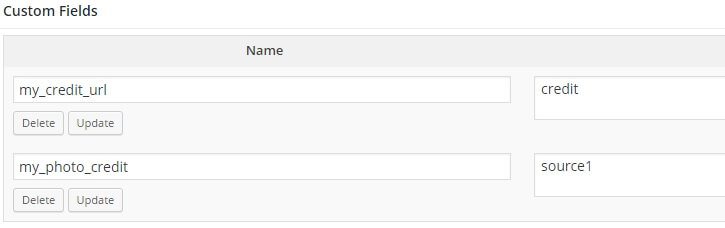Подключение файла
Всегда используйте require_once() для подключения файлов в PHP. Внимательно проверяйте путь до файла.
Добавьте ваш мета плагин в основной файл плагинов:
require_once( 'includes/meta.php' );В файле functions.php для подключения файлов не забывайте использовать get_stylesheet_directory()
require_once( get_stylesheet_directory() . '/assets/my_filters.php' );Отображение метаданных
Теперь, когда мы успешно сохранили метаданные из метабокса, они могут быть отображены в любом месте, используя get_post_meta(), также, как мы это сделали выше. Это может быть сделано непосредственно в шаблоне или внутри функции, подключив Layers экшены.
// Retrieves the stored value from the database
$photo_credit = get_post_meta( get_the_ID(), 'my_photo_credit', true );
$credit_url = get_post_meta( get_the_ID(), 'my_credit_url', true );
// Checks and displays the retrieved value
if( !empty( $photo_credit) ) { ?>
<span class="meta-info">
<a href="<?php echo $credit_url; ?>" target="_blank"><?php echo $photo_credit; ?></a>
</span>
<?php }
Строки 2-3: - Определим переменные для наших полей. Убедитесь в правильности именований мета полей.
Строка 6: - Проверяем существование значения. Это позволит избежать пустых элементов на странице.
Строка 7: (не обязательно) - Здесь мы завернем наши мета данные в span с классом .meta-info.
Настройка кастомайзера
Настройки по умолчанию
Панели, секции и контролы
Чтобы понять, где появятся ваши настройки и какой элемент нужно будет добавить в админку Layers, давайте познакомимся с тем, что уже есть:
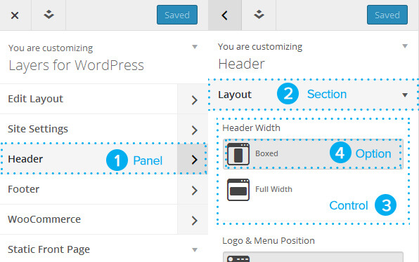- Панель
- Секция
- Контрол
- Опция
Layers имеет набор инструментов для удобного и быстрого добавления новых пользовательских элементов в админ панель Кастомизатора.
- layers_customizer_panels
- layers_customizer_sections
- layers_customizer_controls
Вы можете добавлять пользовательские панели для размещения новых разделов и контролов или можете добавлять разделы и элементы управления в уже имеющиеся разделы.
Структура фильтров
Плагины
Ваши пользовательские функции контролов добавляются в класс плагина, после инициализации и после закрывающей скобки. Фильтры и кастомные функции, содержащие элементы управления в вашем плагине инициализируются конструктором.
Пример:
public function init(){
/**
* Your regular plugin initialization code will go here
*/
// Modify CSS Customizer Control
add_filter( 'layers_customizer_controls', array( $this, 'my_customizer_controls' ) );
}
public my_customizer_controls( $controls ){
// Custom customizer code will go here
}
Дочерняя тема
Ваша функция пользовательских элементов управления в дочерней теме открывается почти также, как расширение, но нуждается в публичной видимости.
Фильтры и кастомные функции, содержащие элементы управления пишутся в functions.php дочерней темы.
Пример:
add_filter( 'layers_customizer_controls', 'my_layers_customizer_controls', 100 );
function layers_customizer_controls( $controls ){
// Custom Customizer code will go here
}
Ниже объясняется каждый фильтр в деталях.
Кастомные панели
layers_customizer_panels
add_filter('layers_customizer_panels','layers_child_customizer_panels', 40);Второе значение является именем функции, третье - приоритет.
Добавление кастомной панели
if( !function_exists( 'child_customizer_panels' ) ) {
function child_customizer_panels( $panels ){
$panels['theme-options'] = array(
'title' => __( 'Theme Options' , 'child' ),
'description'=> __( 'Your custom description.' , 'child' ),
'priority' => 130
);
return $panels;
}
- Строка 1: - срока обеспечивает безопасность и проверяет наличие функции с таким-же именованием. Выбирая уникальные имена - вы избегаете конфликтов функций.
- Строка 2: - Настройка вашей функции для изменения индекса $panels
- Строка 3: - Устанавливает ключ или имя панели, т.е. 'theme-options'. Они должны быть в нижнем регистре и использовать только черточку или нижнее подчеркивание.
- Строка 4: - Устанавливает 'title' для вашего раздела, который отображается в кастомайзере. Строки всегда должны использовать метод l10n , т.е. __(‘string’, ‘textdomain’)
- Строка 5: - Устанавливает 'description' (опционально). Это небольшой текст, который можно использовать для разъяснения.
- Строка 6: - Устанавливает приоритет, который является числовым значением, определяющим, где панель размещается в списке. Значение 130 является безопасным выбором, поскольку это гарантирует, что ваши панели будут размещены ниже базовых панелей Layers.
Кастомные секции
layers_customizer_sections
add_filter('layers_customizer_sections','layers_child_customizer_sections', 100);Второе значение является именем функции, третье - приоритет. 100 - это хороший выбор.
Добавление кастомной секции
У каждого раздела должны быть определены названия, чтобы панель была добавлена. Пример показывает, как добавить кастомную секцию header-social-media (Social Media Profiles) на вашу кастомную панель theme-options.
if( !function_exists( 'child_customizer_sections' ) ) {
function child_customizer_sections( $sections ){
$sections[ 'header-social-media' ] = array(
'title' => __( 'Social Media Profiles' , 'child' ),
'panel' => 'theme-options',
);
return $sections;
}
}
Добавление секции на существующую панель
Пример показывает, как добавить нашу кастомную секцию header-social-media (Social Media Profiles) на существующую панель Layers. Главное отличие от предыдущего - наличие array_merge, который принимает вашу секцию и размещает с существующими.
if( !function_exists( 'child_customizer_sections' ) ) {
function child_customizer_sections( $sections ){
$sections[ 'header-social-media' ] = array(
'title' => __( 'Social Media Profiles' , 'layerswp' ),
'panel' => 'header',
);
$sections = array_merge( $sections, $sections[ 'header-social-media' ] );
return $sections;
}
}
Панели, созданные для Layers:
- Панель: Header header
- Панель: Footer footer
- Панель: WooCommerce woocommerce
Кастомные контролы
layers_customizer_controls
add_filter('layers_customizer_controls','layers_child_customizer_controls', 100);Второе значение является именем функции, третье - приоритет. 100 - это хороший выбор приоритета.
Базовая структура контрола:
function yourtheme_customizer_controls( $controls ){
$controls[ 'section-name' ] = array(
'option-one' => array(
'type' => 'layers-text',
'label' => __( 'Option One' , 'mytheme_textdomain' )
),
'option-two' => array(
'type' => 'layers-text',
'label' => __( 'Option Two' , 'mytheme_textdomain' )
)
);
return $controls;
}
Каждый контрол использует массив, чтобы объявить себя, то-есть option-oneoption-two и так далее.
Добавление кастомного контрола
Пример показывает, как добавить некоторые текстовые поля для ввода URL в кастмную секцию header-social-media:
if( !function_exists( 'child_customizer_controls' ) ) {
function child_customizer_controls( $controls ){
$controls[ 'header-social-media' ] = array(
'social-twitter' => array(
'type' => 'layers-text',
'label' => __( 'Twitter Username' , 'child' )
),
'social-facebook' => array(
'type' => 'layers-text',
'label' => __( 'Facebook Vanity URL' , 'child' )
),
'social-pinterest' => array(
'type' => 'layers-text',
'label' => __( 'Pinterest Username' , 'child')
)
);
return $controls;
}
}
type - Определение типа контрола: 'type' => 'layers-text'
Смотрите layers_customizer_controls для просмотра всех доступных типов.
label - Заголовок. Должен использовать метод l10n __() для обертки значения.
'label' => __( 'Choose Background' , 'layerswp' )'placeholder' => "Enter URL",description - Длинный текст описания(опционально).
'description' => sprintf( __( 'For more information, see <a href="%s" target="_blank">follow this link</a>.', 'yourtheme_textdonmain' ), 'https://www.your-url.com' ),
choises - используется в комбинации с type для определения выпадающих опций. Пример ниже показывает, как мы добавляем опцию Области Виджета с использованием типа layers-select и заполняем пункты 4-мя вариантами.
'footer-sidebar-count' => array(
'type' => 'layers-select',
'label' => __( 'Widget Areas' , 'layerswp' ),
'default' => 4,
'sanitize_callback' => 'layers_sanitize_number',
'choices' => array(
'0' => __( 'None' , 'layerswp' ),
'1' => __( '1' , 'layerswp' ),
'2' => __( '2' , 'layerswp' ),
'3' => __( '3' , 'layerswp' ),
'4' => __( '4' , 'layerswp' ),
)
) // layout
Добавление контролов в существующие секции
Этот пример показывает, как добавить текстовые поля для профилей в социальных медиа в Header (header-layout) - секцию, которая уже есть в Layers.
Вы можете посмотреть доступные наименования ключей для секций Layers в массиве sections: core/customizer/config.php
if( !function_exists( 'mytheme_customizer_controls' ) ) {
function mytheme_customizer_sections( $controls){
$social_media_controls = array(
'social-twitter' => array(
'type' => 'layers-text',
'label' => __( 'Twitter Username' , 'mytheme_textdodmain' ),
),
'social-facebook' => array(
'type' => 'layers-text',
'label' => __( 'Facebook Vanity URL' , 'mytheme_textdodmain' ),
),
'social-pinterest' => array(
'type' => 'layers-text',
'label' => __( 'Pinterest Username' , 'mytheme_textdodmain' ),
),
);
$controls['header-layout'] = array_merge( $controls['header-layout'], $social_media_controls );
return $controls;
}
}
Следующие панели и секции уже существуют в Layers и могут быть расширены путем добавления кастомных элементов управления в соответствующем разделе:
- Панель: Настройки сайта site-settings
- Секция: Логотип & Заголовок title_tagline
- Секция: Меню nav
- Секция: Site Colors site-colors
- Секция: Sidebars content-sidebars
- Секция: Шрифты fonts
- Панель: Верхняя часть сайта header
- Секция: Макет eader-layout
- Секция: Дополнительные скрипты header-scripts
- Панель: Нижняя часть сайта footer
- Секция: Макет footer-layout
- Секция: Customization footer-customization
- Секция: Текст footer-text
- Секция: Дополнительные скрипты footer-scripts
- Панель: WooCommerce woocommerce
WordPress предлагает следующие значения по умолчанию:
title_tagline – Название и слоган
colors – Цвета
header_image – Изображение заголовка
Настройка селекторов для управления цветом
Если у вас есть настройки кастомного контрола с типом layers-color, вам нужно булет связать его с элементом, для этого нужно изменить, а затем вывести CSS, правильно используя layers_inline_styles. Это гарантирует, что опции, выбранные в кастомайзере переопределят абсолютно все другие свойства. Также это позволяет подключиться к контролу invert, который помогает автоматически регулировать текстовые цвет текста, в зависимости от того, светлую тему фона выбрал пользователь, или темную.
Добавим инъекцию layers_apply_customizer_styles().
add_action( 'wp_enqueue_scripts', 'layers_child_customizer_styles', 100 );Первое значение wp_enqueue_scripts позволяет подключить вашу функцию в уже существующую линейку скриптов и даст WordPress управлять системой, если что-то пойдет не так. Второе значение определяет имя функции, а третья - приоритет. 100 явлется безопасным выбором и важнее авторских плагинов.
if( !function_exists( 'layers_child_customizer_styles' ) ) {
function layers_child_customizer_styles() {
$widget_title_color = layers_get_theme_mod(
'widget-title-color' ,
TRUE
);
if( '' != $widget_title_color ) {
layers_inline_styles( array(
'selectors' => array( '.sidebar .section-nav-title'),
'css' => array(
'color' => $widget_title_color,
),
));
}
}
}
Строка 2: - Создаем новую функцию layers_child_customizer_styles
Строка 3: - Устанавливаем переменную 1widget_title_color, которая будет представать пред взором пользователя для выбора. Мы используем layers_get_theme_mod() для захвата кастомного элемента управления widget-title-color, который определяется в строке 4.
Строка 5: - TRUE соответствует allow_empty и может оставаться пустым.
Строка 7: - Если пусто - инлайновые CSS выводиться не будут.
Строка 8: - Наконец, устанавливаем инлайновый CSS layers_inline_styles()
Этот код должен располагаться в functions.php или внутри класса вашего плагина, где идут все остальные пользовательские Хуки, а не внутри функций кастомных контролов, секций или панелей.
Использование опций во фронтенде
Чтобы использовать настройки во фронтенде Layers, мы используем вспомогательную функцию layers_get_theme_mod(), которая работает также, как основной get_option() WordPress.
В следующем примере мы добавим наши новые элементы управления в заголовке Layers, используя фильтр the layers_before_header_nav. Этот код располагается в functions.php или плагине, где используются остальные Хуки.
add_action( 'layers_before_header_nav' , 'my_header_social_media_icons' );
function my_header_social_media_icons(){ ?>
<div class="pull-right">
<?php if( '' != layers_get_theme_mod( 'social-facebook' ) { ?>
<a href="https://facebook.com/<?php echo layers_get_theme_mod( 'social-facebook' ); ?>"><i class="i-facebook">facebook</i></a>
<?php } ?>
<?php if( '' != layers_get_theme_mod( 'social-twitter' ) { ?>
<a href="https://twitter.com/<?php echo layers_get_theme_mod( 'social-twitter' ); ?>"><i class="i-facebook">facebook</i></a>
<?php } ?>
<?php if( '' != layers_get_theme_mod( 'social-pinterest' ) { ?>
<a href="https://pinterest.com/<?php echo layers_get_theme_mod( 'social-pinterest' ); ?>"><i class="i-pinterest">pinterest</i></a>
<?php } ?>
</div>
<?php };
}
Прессеты
Layers бладает возможностью экспортировать каждую страницу по отдельности и упаковывать их вместе с пользовательскими CSS и XML экспортом при создании StyleKit, благодаря этому пользователи могут импортировать полностью настроенные макеты страниц. Если у вас уже есть дочерняя тема, то это не нужно упаковывать. Вместо этого вы можете интегрировать прессеты непосредственно в тему путем фильтрации хука layers_preset_layouts. Это устанавливает прессеты в Layers в области добавления новой страницы, позволяя пользователям выбрать один из кастомных макетов и загрузить его в один клик, по сравнению с количеством действий, при импорте StyleKit.
Настройка изображений
Ваши подготовленные изображения должны быть сохранены в специальной папке, внутри дочерней темы, для того, чтобы они могли быть автоматически получены при загрузке XML данных.
Изображения, используемые в качестве фона или для полной ширины слайдов должны быть по ширине не менее 1920px. Изображения, используемые в других местах, должны быть по ширине не менее 1000px. Это гарантирует, что ваша тема будет достойно отображать ваши изображения на различных устроствах при масштабировании контента. Какждый пресет должен быть снабжен скриншотом screenshot.png/jpg, шириной 515px и высотой 350px.
- В папке вашей дочерней темы должна существовать папка /assets.
- Создайте в папке /assets папку /preset-images.
- Добавьте все картинки, используемые в пресетах в данную папку.
Настройка демо данных
Прежде, чем интегрировать пресет, вам необходимо настроить вашу дочернюю тему и страницы Layers. Лучше, конечно, сделать это на реальном сервере, если вам необходимо экспортировать содержимое в XML файл, иначе ваши покупатели лишатся возможности импорта изображений с удаленного сервера. Также убедитесь, что все изображения загружены в папку /assets/preset-images
Экспорт данных
Для экспорта страниц, используйте функцию экспорта в самом редакторе страниц. Создастся .json файл макета. Экспортируйте каждую страницу в отдельный .json файл.
Настройка функций
Вы можете добавлять свои пользовательские стили в файл functions.php вашей темы, но json структура может обрабатываться слишком долго, поэтому можно создать вспомогательный файл preset.php, который включаетс в functions.php посредством require_once(). Данный функционал срабатывает при добавлении новой страницы Layers.
require_once get_stylesheet_directory() . '/includes/presets.php';В вашем preset.php определите фильтр:
add_filter( 'layers_preset_layouts', 'layers_child_presets', 0 );В данном примере мы используем layers_child_presets как нашу пользовательскую функцию, где child может быть наименование вашей темы. Давайте взгляним на функцию:
function layers_child_presets( $layers_preset_layouts ) {
$layers_child_presets[ 'first-preset-id' ] = array(
'title' => __( 'My Child Theme - Home', 'child-theme-slug' ),
'screenshot' => get_stylesheet_directory_uri().'/assets/preset-images/home-preset.png',
'screenshot_type' => 'png',
'json' => ''
);
return array_merge( $layers_child_presets, $layers_preset_layouts );
}
Строка 1: Фильтр 1layers_preset_layouts -
Выбор функции 1layers_preset_layouts и определение собственной переменной 1layers_child_presets позволит нам создать свой массив в Layers.
Строка 3: first-preset-id
Это начало нашего массива, который должен иметь уникальный идетнификатор для пресета. Здесь мы используем первый заданный идентификатор, но ваш может быть my-child-home-preset.
Строка 4: Заголовок пресета
Аргумент заголовка - это простая строка, используемая с __(), для того, чтобы данный текст мог быть переведен на другие языки. child-theme-slug - это основной слаг, определенный в функции локализации.
Строка 5: URL скриншота
Для лучшей производительности храните скриншот в папке /assets/preset-images. Мы используем get_stylesheet_directory_uri() для того, чтобы получить корень дочерней темы, которую мы создали.
Строка 7: Json
Аргумент json просматривает все содержимое вашего файла экспорта, который указан в кавычках.
Строка 10: Возврат
Наконец, мыобъединяем наши массивы посредством array_merge() и возвращаем результат.
Тестируйте!
Активируйте вашу дочернюю тему на свежеустановленном WordPress.
Перейдите Layers -> Добавить страницу и убедитесь, что появляются ваши пресеты.
Главная и другие страницы админки WordPress
На главной странице админки WordPress вы можете разместить интерактивный гайд, который поможет пользователю начать работу с темой или плагином. В Layers и оффициальных расширениях это делается с помощью активации "setup wizard", который проводит пользователя через несколько кратких шагов, начиная с видео и заканчивая Кастомайзером, где пользователи могут начать использовать фреймфорк.
Ссылки Admin Menu
add_submenu_page()Внутри плагина:
public function add_submenu_page(){
add_submenu_page(
'layers-dashboard',
__( 'Demo Extension Help' , LAYERS_DEMO_EXTENSION_SLUG ),
__( 'Demo Extension Help' , LAYERS_DEMO_EXTENSION_SLUG ),
'edit_theme_options',
'layers-demo-extension-get-started',
array( $this, 'load_onboarding' )
);
}
public function load_onboarding(){
require LAYERS_DEMO_EXTENSION_DIR .'includes/onboarding.php';
}
Строка 3: - Слаг меню Layers с layers-dashboard.
Строка 4: - Название страницы, заключенное в __() для перевода.
Строка 5: - Название нашей ссылки в меню, заключенное в __() для перевода.
Строка 7: - слаг страницы. Убедитесь, что используется уникальный Слаг. Не называйте например так: settings или get-started, это плохой вариант.
Строка 8: - Каллбек.
Строка 12: - Функция load_onboarding просто захватывает наш шаблон страницы Onboarding.
Строка 13: - Мы используем require для подключения частей в хедер и футер. Наш постоянный DIR - это константа, используемая для получения пути к папке плагина.
Теперь подключим к admin_menu из вашего __construct() и зададим приоритет 60.
add_action( 'admin_menu', array( $this, 'add_submenu_page' ), 60 );Внутри functions.php в дочерней теме:
if( ! function_exists('register_layers_child_submenu_page') ) {
function register_layers_child_submenu_page(){
add_submenu_page(
'layers-dashboard',
__( 'Layers Child Help' , 'layers-child' ),
__( 'Layers Child Help' , 'layers-child' ),
'edit_theme_options',
'layers-child-get-started',
'get_child_onboarding'
);
}
}
function get_child_onboarding(){
require_once get_stylesheet_directory() . '/includes/theme-help.php';
}
add_action('admin_menu', 'register_layers_child_submenu_page', 60);
Admin Страницы
Для обоих Onboarding или free-form страниц админки, ваш шаблон требует только одну вещь - это обертку с классом layers-area-wrapper class:
<section class="layers-area-wrapper">
// Your Admin Page markup goes here
</section>
Что вы поместите внутрю такой обертки - решать вам, но соблюдайте основные правила:
- Ваша админ страница не должна конкурировать непосредственно с Layers Marketplace (но можно, конечно, перелинковать свои продукты для демонстрации).
- Не размещайте какие либо элементы настройки фронтенда в данную страницу, все настройки должны быть размещены в Кастомайзер.
В большинстак случаев, дочерние темы Layers не нуждаются в дополнительном Onboarding и будут сразу отправлены в мастер основных настроек, но вы можете все-таки использовать свой экран приветствия, как способ создавать свои справочные материалы, гайды и введения.
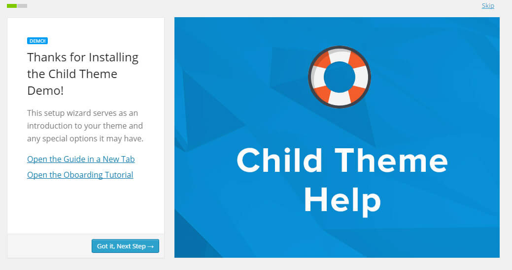Редирект на активацию
Плагины
Во-первых, мы используем set_transient() для создания перенаправления и задаем приоритет 30, чтобы обеспечить установку после того, как Layers загружен:
public function demo_extension_active() {
set_transient( 'layers_demo_extension_activated', 1, 30 );
}
Затем настраиваем редирект:
public function demo_extension_onboard_redirect() {
if ( ! current_user_can( 'manage_options' ) ) return;
if ( ! get_transient( 'layers_demo_extension_activated' ) ) return;
wp_redirect( admin_url( 'admin.php?page=layers-demo-extension-get-started' ) );
}
Строка 3: - Мы используем current_user_can() для того, чтобы установить минимальную совместимость с manage_options для этой страницы, которая будет отображаться.
Строка 4: - Здесь мы используем get_transient() для проверки процесса layers_demo_extension_activated. Это гарантирует, что действие происходит только при активации темы.
Строка 6: - Вместе с wp_redirect va можем использовать admin_url для того, чтобы задать путь к нашей странице в Слаге, который мы определили ранее в функции add_submenu_page.
В финале мы делаем инъекцию нашего творчества в __contruct():
register_activation_hook( LAYERS_DEMO_EXTENSION_FILE , array( $this, 'activate' ) );
add_action( 'init' , array( $this, 'demo_extension_onboard_redirect') );
Дочерние темы
Дочерние темы будут перенаправлять на Layers Getting Started по умолчанию. Мы действительно рекомендуем сохранить это в таком виде дл пользователей, которые никогда не использовали Layers, вы можетеперенаправить пользователя на вашу страницу с помощью wp_safe_redirect() внутри functions.php
function layers_child_setup() {
if( isset($_GET["activated"]) && $pagenow = "themes.php" ) {
update_option( 'layers_welcome' , 1);
wp_safe_redirect( admin_url('admin.php?page=layers-child-get-started'));
}
}
add_action( 'after_setup_theme' , 'layers_child_setup', 30 );
Строка 2: - Проверяет, только что ли активирована тема на странице Темы. Если так, то:
Строка 3: - Установите опции layers_welcome значение 1 (true) - это опция, созданная Layers Core.
Строка 4: - wp_safe_redirect в admin_url использует Слаг страницы, который мы определили ранее в нашей функции Line 7: Hook our function into after_setup_theme and give it a priority of 30 to ensure it runs after Layers..
Строка 7: - Подключаем наху функцию в after_setup_theme и задаем приоритет 30, для запуска после Layers.
Поддержка языков
Для добавления перевода в вашу дочернюю тему, для начала зарегистрируйте текстдомэйн в вашем functions.php
Самый простой способ подготовить свой перевод - это использовать плагин, типа Loco Translate. Вы также можете подготовить эти переводы с помощью Poedit. Посмотрите Translation tips для того, чтобы узнать о том, как сделать хороший перевод темы на другие языки. Ваши .po и .mo файлы должны быть сохранены в папке /languages вашей дочерней темы.
Продажа тем
Layers - это уникальный билдер страниц и сайтов и фреймворк для создания тем для WordPress. Дочерние темы для Layers и наборы пресетов (StyleKit) можно продавать на ThemeForest.
Требования к загрузке на ThemeForest
- Дочерние темы Layers должны соответствовать всем стандартам для загрузки тем на ThemeForest.
- LayersWP Framework не должен быть включен в в дочернюю тему в Zip архиве. Вмето этого сделайте ссылку на скачивание Layers в документации к теме.
- Дочерние темы должны включать файл index.php, иначе они не смогут быть загружены на ThemeForest. Файл index.php должен выглядеть следующим образом:
Ни больше. Ни меньше.<?php // load the parent index.php file require_once( get_template_directory() . '/index.php' );
Товар должен включать следующее описание на ThemeForest, чтобы покупатели знали, что он работает с Layers.
<a href="https://all-marketplaces.s3.amazonaws.com/growth/layers/layerswp.zip">
<a href="https://enva.to/-onzw"><img src="https://all-marketplaces.s3.amazonaws.com/growth/layers/landing-badge-small.png"></a>
Технические требования
- Дочерняя тема должна удовлетворять следующей структуре файлов и папок, в качестве основы нужно брать родительскую тему Layers, как в данном примере:
- Папка дочерней темы /
- assets /
- preset-images/
- css /
- images /
- js /
- theme.js
- languages /
- partials /
- functions.php
- style.css
- assets /
CSS и стилизация
- Правила CSS должны быть достаточно конкретными для переопределения Layers CSS.
- Шрифтовые библиотеки могут быть загружены из CDN источника дл снижения нагрузки на сервер.
- Обратите внимание: Шрифты Google Fonts уже включены в Layers Framework.
- Шрифтовые иконки должны быть размещены в подпапке /assets дочерней темы.
- Дополнительные стили шрифтов и @font-face CSS должны храниться в отдельном файле fonts.css
- fonts.css должен быть загружен до основный стилей дочерней темы.
- Layers Кастомайзер должен быть настроен по умолчанию в functions.php, чтобы предопределить настройки сайта.
JavaScript
- Дополнительные скрипты должны размещаться в папке assets/js дочерней темы.
- Вы не должны менять скрипты Layers в родительской теме и не должны копировать куски кода оттуда. Вместо этого используйте API и подключайте корректировки в файле assets/js/theme.js
PHP и шаблоны
- Включение отдельных PHP файлов и библиотек должно быть сделано с помощью require_once() из файла functions.php дочерней темы.
- Любые шаблоны страниц, загруженные в дочерней теме, должны использовать базовую структуру шаблонов Layers HTML, такие-же классы и функции для вывода элементов, таких, как Сайдбары (как в шаблонах Layers по умолчанию).
-
Дочерняя тема не должна изменя соответствующие элементы в существующих шаблонах Layers:
- Не изменяйте типы заголовков шаблона. Заголовки были оптимизированы для SEO.
- Не отходите от HTMl стайлинга Layers Framework (например, не изменяйте <section>). Разрешено добавление элементов, но не удаление стандартных.
- не удаляйте классы по умолчанию или вызовы функций внутри врапперов, так как это может нарушить функциональность и настройки фреймворка.
- Не используйте query_posts() функцию для модификации стандартного запроса.
- При регистрации новый сайдбаров, вы не должны использовать простые номера или родные ID значения, такие, как "sidebar", "widget-area" или "widgets". Идентификаторы сайдбаров должны писаться в нижнем регистре и использовать дефисы, чтобы отделить слова.
- Области кастомных виджетов должны использовать условия проверки "is_active_sidebar", чтобы избежать конфликтов.
- Дочерние темы не должны вводить какой-либо функционал по работе с контентом, например таке, как Custom Post Types, Custom Taxonomies, shortcodes и так далее. Вместо этого - вы должны обрабатывать дополнительный функционал в отдельных плагинах, которые могут быть упакованы вместе с вашей дочерней темой или предлагаться как аддон.
Дочерние темы могут включать в себя дополнительные пресеты для увеличения производительности генератора макетов. Все изображения, используемые в шаблоне, должны быть добавлены в папку assets/preset-images
Продажа
Наш официальный маркетплейс - это ThemeForest. Ознакомьтесь с требованиями перед добавлением темы На этой странице.
Как Open-Source фрэймворк, мы не можем ограничить то, что вы хотите продать и где вы хотите продать. Но ThemeForest является единственной площадкой, где официально поддерживается фреймворк Layers и местом, где продаются продукты, созданные с использованием Layers.
Вы, конечно, можете продавать свои дочерние темы через другие магазины или ваш собственный сайт, но продавая на ThemeForest вы будете обеспечены поддержкой вашего продукта и дстаточно обширной аудиторией, что является огромным преимуществом при старте.
Требования к документации
Все темы на ThemeForest должны быть задокументированы, чтобы покупателям было проще установить и настроить тему.
- Пожалуйста, ознакомьтесь с ThemeForest General File Preparation Guidelines, чтобы понять, как оформляются справочные материалы темы.
- Вы должны быть ответственны за поддержку покупателей дочерней темы, включа установку, настройку, обновлений и поиск неисправностей.
Премиум уроки от WebDesign Master


Другие уроки по теме «CMS/Framework»
- Как создать тему для WordPress. Грамотная посадка верстки на WordPress (Right Way)
- Быстрое создание красивых сайтов на WordPress. Layers Style Kit на реальном примере
- Layers. Быстрая разработка сайтов на WordPress #1. Знакомство с Layers WP
- Создание лендинга на WordPress с нуля
- Посадка типовой секции Landing Page на MODx с использованием MIGX (добавляемые поля)